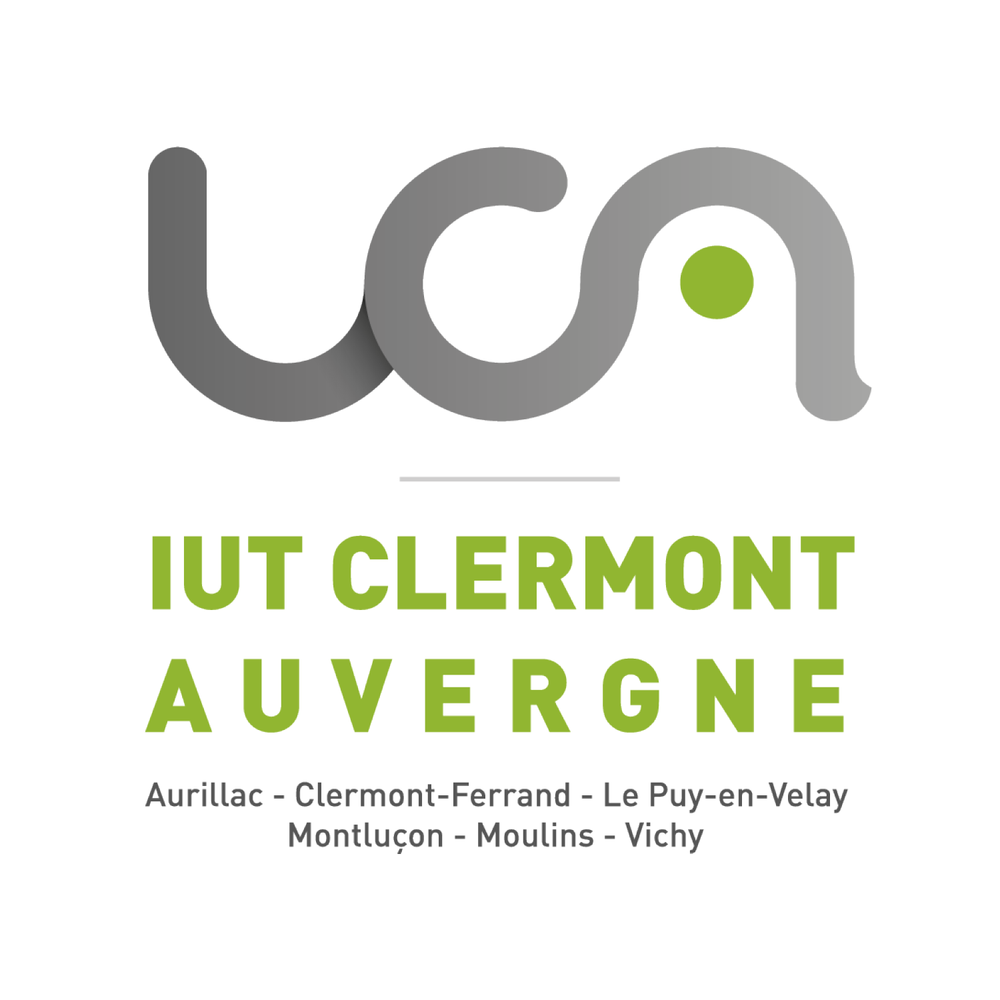
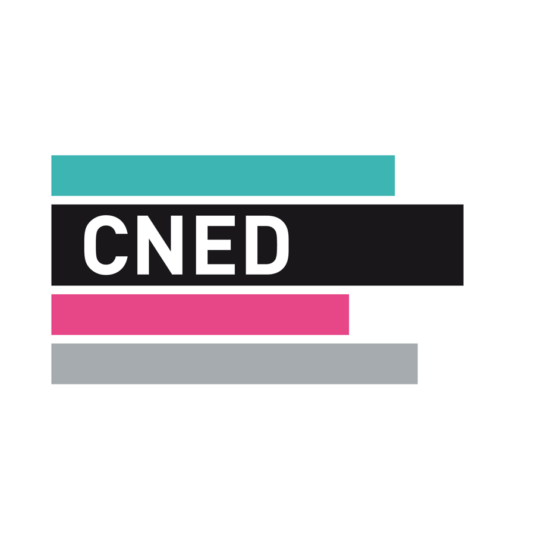
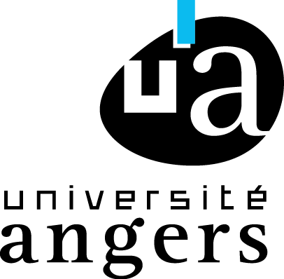
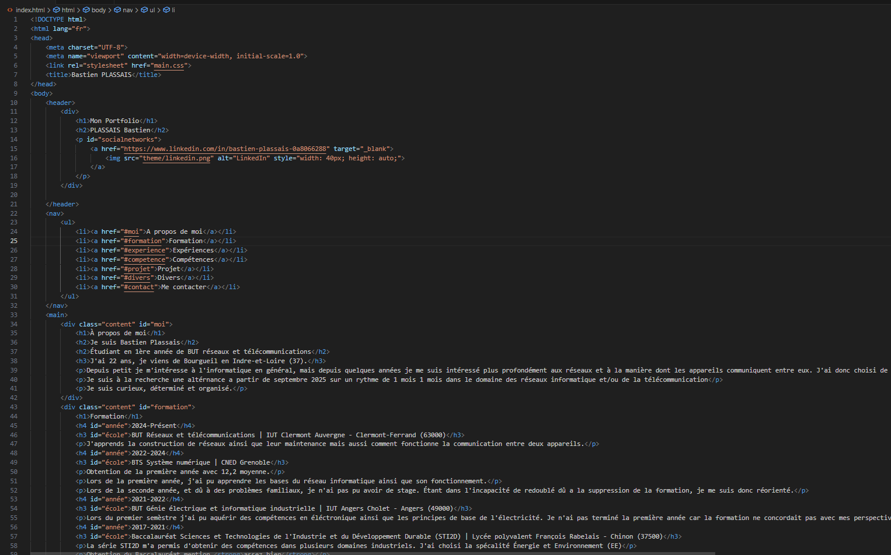
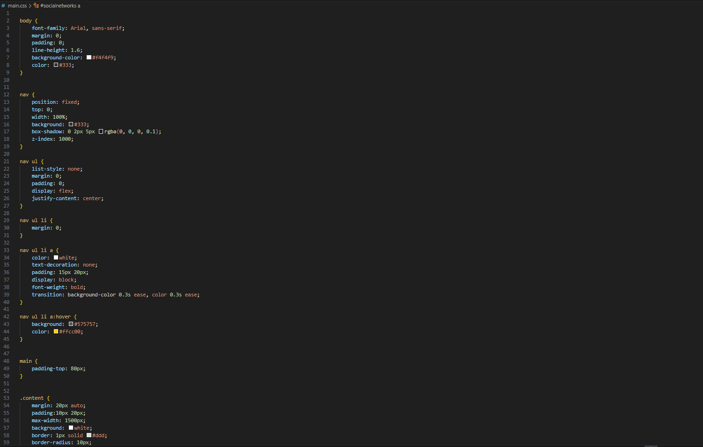
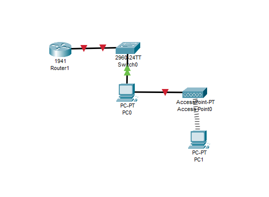
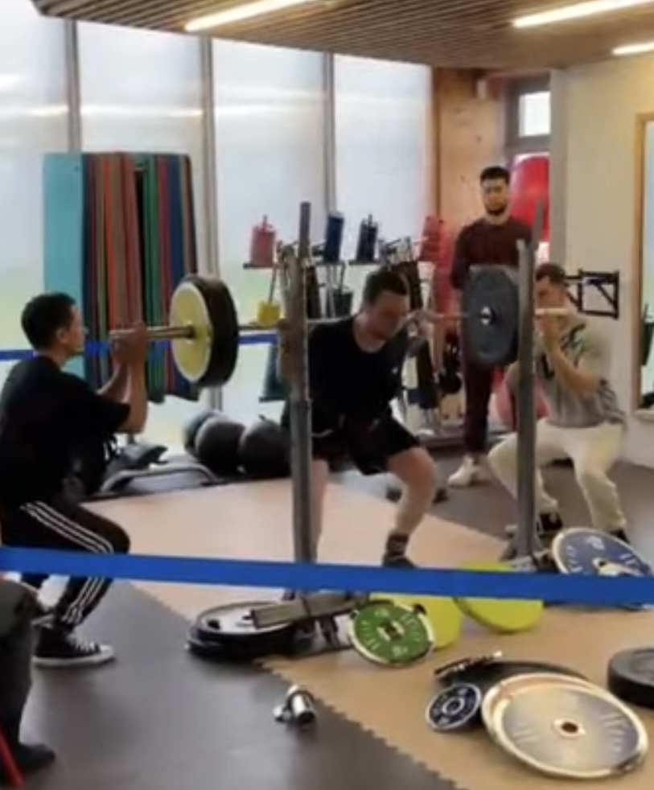
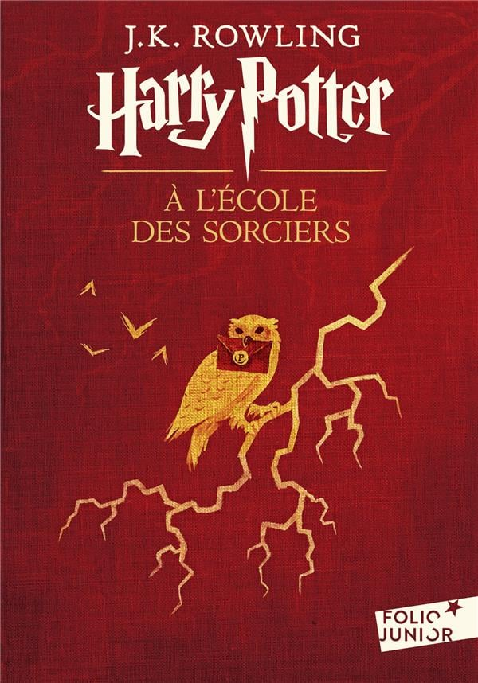

Étudiant en 1ère année de BUT Réseaux et Télécommunications
J'ai 22 ans, je viens de Bourgueil en Indre-et-Loire (37).
Depuis petit, je m'intéresse à l'informatique en général, mais depuis quelques années, je me suis intéressé plus profondément aux réseaux et à la manière dont les appareils communiquent entre eux. J'ai donc choisi de m'orienter dans ce domaine de plus en plus important.
Je suis curieux, déterminé et organisé.
Je suis à la recherche d'une alternance à partir de septembre 2025 sur un rythme d'un mois/un mois dans le domaine des réseaux informatiques et/ou de la télécommunication.
Formation

2024-Présent
BUT Réseaux et Télécommunications | IUT Clermont Auvergne - Clermont-Ferrand (63000)
J'apprends la construction de réseaux ainsi que leur maintenance, mais aussi le fonctionnement de la communication entre deux appareils.

2022-2024
BTS Systèmes numériques | CNED Grenoble
Obtention de la première année avec 12,2 de moyenne.
Lors de la première année, j'ai pu apprendre les bases du réseau informatique ainsi que son fonctionnement.
Lors de la seconde année, n'ayant pas trouvé d'entreprise pour un stage de la durée requise et étant dans l'incapacité de redoubler en raison de la suppression de la formation, je me suis réorienté.

2021-2022
BUT Génie Électrique et Informatique Industrielle | IUT Angers Cholet - Angers (49000)
Lors du premier semestre, j'ai acquis des compétences en électronique ainsi que les principes de base de l'électricité. Je n'ai pas terminé la première année, car la formation ne correspondait pas à mes perspectives d'avenir.
2017-2021
Baccalauréat Sciences et Technologies de l'Industrie et du Développement Durable (STI2D) | Lycée Polyvalent François Rabelais - Chinon (37500)
La série STI2D m'a permis d'obtenir des compétences dans plusieurs domaines industriels. J'ai choisi la spécialité Énergie et Environnement (EE).
Obtention du Baccalauréat mention assez bien.
Expériences
2022-2024
Hôte de caisse - Hyper U Bourgueil (37140)
Contexte : J'ai travaillé en CDI étudiant lors de mes deux années en BTS Systèmes numériques sur une base de 18 heures par semaine pendant 1 an et 9 mois.
Objectifs : L'objectif était de financer mes études.
Travaux réalisés : Accueillir les clients et effectuer l'encaissement.
Résultats : J'ai amélioré la qualité du service rendu, ce qui a contribué à la fidélisation des clients.
Compétences
Humaines :
Assidu
Ma pratique sportive m’a appris à être constant et rigoureux. Je sais que seule une régularité dans mes efforts me permet d’atteindre mes objectifs, que ce soit dans le sport ou dans mes études. Cette assiduité me pousse à rester concentré, à respecter les délais et à donner le meilleur de moi-même dans tout ce que j’entreprends.
Organisé
L'organisation est essentielle dans mon quotidien pour gérer efficacement mes études et ma pratique sportive. Je planifie mes journées de façon à respecter les échéances de mes cours, comme les projets ou les révisions, tout en restant performant dans mes entraînements sportifs, que je pratique trois fois par semaine.
Curieux
J'aime découvrir et apprendre de nouvelles choses, que ce soit dans mes études ou mes loisirs. Cette curiosité me permet d'élargir mes connaissances et de mieux comprendre le fonctionnement des outils et des concepts qui m'entourent. Par exemple il y a peu je me suis intéressé aux romans de science fiction comme "L'institut" de Stephen King.
Techniques :
Configuration de réseaux informatiques
J'ai développé cette compétence lors des différents TD et TP, d'abord sur un plan théorique grâce au logiciel Cisco Packet Tracer puis sur le plan pratique sur des vraies machines.
Language de programmation : Python
Lors de plusieurs TP j'ai pu apprendre et aquérir des compétences dans la programmation en Python.
Durant ces TP, j'ai pu apprendre les fondamentaux du Python grâce à des leçons et des exercices progressifs.
Mesure et diagnostiques
Lors des TP de télécommunication, j'ai développé des compétences en mesures et diagnostics, notamment à travers l'utilisation d'outils spécialisés tels que les analyseurs de spectre et les OTDR (réflectomètres optiques).
Linguistiques :
Anglais
Niveau B1-B2
Espagnol
Niveau A2-B1
Projets
Portfolio
Contexte : Lors de ce projet, nous devions, dans le cadre d'un travail encadré par un professeur et réalisé en autonomie, créer un CV et un portfolio.
Objectif : L'objectif de ce projet était de fournir une présentation visuelle, organisée et convaincante de mes compétences, réalisations et expériences sous la forme d'une page web afin de l'utiliser dans mes futures recherches d'emploi.
Travaux réalisés : J'ai dû créer une page web en HTML avec un visuel conçu en CSS.
Résultats : Grâce à ce projet, j'ai découvert les langages HTML et CSS, ce qui m'a permis d'améliorer mes compétences en développement web.
Note :
Note : 13,80 Moyenne de classe : 12,22

Code HTML

Code CSS
Travaux pratiques de réseaux
Contexte : Lors des travaux pratiques de réseaux, encadrés par un professeur, nous devions réaliser des travaux pratiques afin de mettre en pratiques les connaissances théoriques vu en cours.
Obejtif : Dans le cadre de ma formation, ces travaux pratiques avaient pour objectif de m'initier aux concepts fondamentaux des réseaux informatiques, tels que la configuration, la sécurité et la gestion des équipements réseau.
Travaux réalisés : Nous devions mettre en lien un sous réseau composé d'un point d'accès WIFI ainsi que d'un pc connecté en WIFI au réseau de la salle de TP tout en ajoutant des fonctionnalitées et dfe la complexité
Résultats : J'ai pu monter en compétences dans les domaines de la configuration et gestion de réseaux
Note :
Note : 15.20

Schéma avec cisco packet tracer
Divers

Force Athlétique
La Force athlétique est une discipline sportive qui consiste à réaliser des mouvements de force maximaux dans trois épreuves : le squat, le développé couché et le soulevé de terre. Chaque mouvement est effectué avec des charges lourdes, et l'objectif est de soulever le maximum de poids possible dans chaque épreuve. Je pratique ce sport depuis un an, avec 3 entraînements par semaine, et mon objectif est de participer au championnat de France, où je suis actuellement classé en Niveau Régional 3 pour la saison 2023-2024. Les minimas demandé aillant augment je suis actuellement non classé.

Lecture
Depuis mon enfance, je suis passionné par les mangas. J'ai grandi avec des œuvres comme Naruto, qui m'a appris l'importance de la persévérance, One Piece, avec ses aventures sur l'amitié et la liberté, ou encore Tokyo Ghoul, qui explore des thèmes plus sombres. Récemment, j'ai commencé à lire des romans, ce qui m'offre des histoires plus riches et immersives. En ce moment, je redécouvre la saga Harry Potter, que j'avais adorée à travers les films, et que je trouve encore plus fascinante en livre.